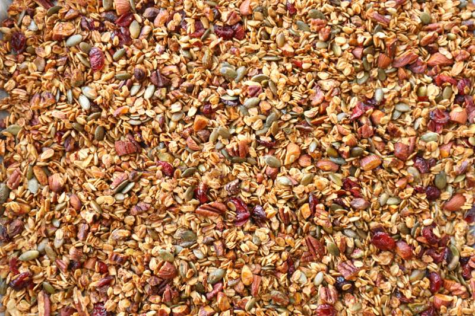
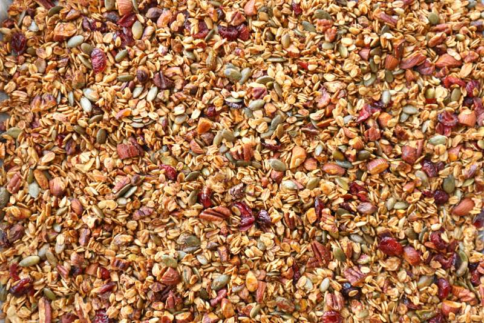

גרנולה ביתית
 כבר אי אפשר לעבור ליד שום חנות
(כולל מכולות, חנויות טבע,קופיקס,חנויות פרחים ואפילו תחנות דלק)
מבלי להתנגש בשולחן מכוסה ערמות של צלופן

הביטו במבט בוחן:
מתחת להרי הצלופן המקווצ׳ץ׳ והסרטים המוזהבים
ישנם קרטונים צבעוניים
חלקם אולי משולשים
כבר אי אפשר לעבור ליד שום חנות
(כולל מכולות, חנויות טבע,קופיקס,חנויות פרחים ואפילו תחנות דלק)
מבלי להתנגש בשולחן מכוסה ערמות של צלופן

הביטו במבט בוחן:
מתחת להרי הצלופן המקווצ׳ץ׳ והסרטים המוזהבים
ישנם קרטונים צבעוניים
חלקם אולי משולשים
רכיבים
- 1 קילו תערובת כוסמין לבן-מלא-70%
- 100 גרם קמח שיפון
- 650 גרם מים
- 25 גרם שמרים
- 30 גרם שמן זית
- 10 גרם מלח
כלבלבלבלב